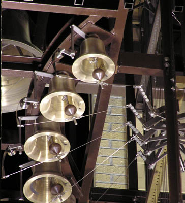
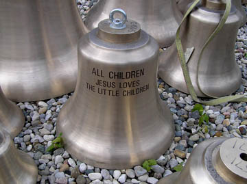

The Children’s Carillon
A Gift For the 21st Century and Beyond
Dedicated to the glory of God
May 16, 2004
“How Sweet the Sound” 
Hear the Bells
Passacaille by Handel, played by John Gouwens
Over 130 years ago – about the time the Ridgway family was building the Door Prairie barn and Meinrad Rumely was developing his prize-winning thresher – children of The Presbyterian Church Sabbath School took up a collection of pennies and nickels to purchase a bell for the church. The collection campaign took several years and raised the full price – a princely sum of $600.00 ($200.00 more than the Rev. Mr. Scofield's annual salary) – that paid for the casting of the 1,502-pound bell in Troy, New York.
No doubt those children performed many hours of extra chores, milking cows, cleaning stalls, carrying firewood and plucking chickens, to earn their bell donations. Imagine the pride the children felt as they heard the first sonorous chime ring across the town, the lakes, and the Indiana fields.
The beautiful peal of that large bronze bell can still be heard today from its position above the main entrance to the present church building. In that sound, we can imagine the laughter of those generous children, many of whom became our ancestors.
 We shared in their pride on May 16, 2004, as we dedicated The Children’s Carillon which is named for the children who bought the original bell, for all the children who grew up listening for the bell as they were called to church and Sunday school, and for the many generations of children who will come to associate the music of our carillon with their hometown and church. The name also reminds us that we are all children of God.
A carillon is an outdoor musical instrument with at least 23 bells tuned chromatically, and therefore capable of playing a tune. Our carillon consists of 36 bells, three octaves, ranging in size from 28 pounds to 1,000 pounds. Played by a carillonneur from a console, or keyboard, in the cabin of the tower the sound of the bells will carry about a half mile. The manual console has small levers or batons in place of keys, which are struck by the loosely clenched fists of the player; pedals, played by the feet, are also provided. Through mechanical linkage, the batons and pedals cause a clapper to strike against each bell (the “action”) to play a note, allowing full expressive control by the carillonneur.
The bells will assist us in celebrating special worship services, weddings, funerals and memorial services as well as in presenting recitals. They will fill the air with music as they summon us happily to worship, peal forth joyfully on wedding days, and ring gratefully for the lives of departed members of our church family.
For now and for hundreds of years to come, the exciting sounds of these bells will proclaim to our community that the Christian message endures. The Carillon Tower, rising 56 feet into the air, provides a landmark for La Porte that people of all faiths will look to as a beacon of hope.
Read the complete story of the planning and execution of the purchase and construction of The Children’s Carillon